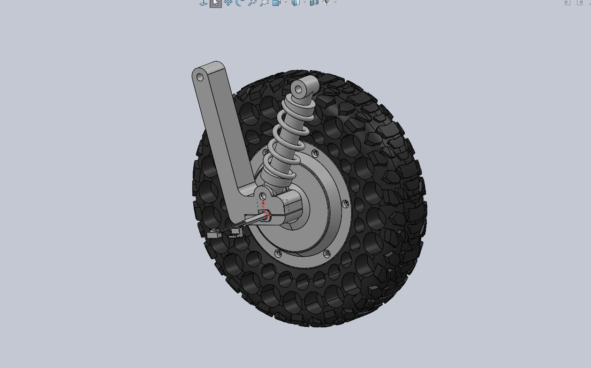
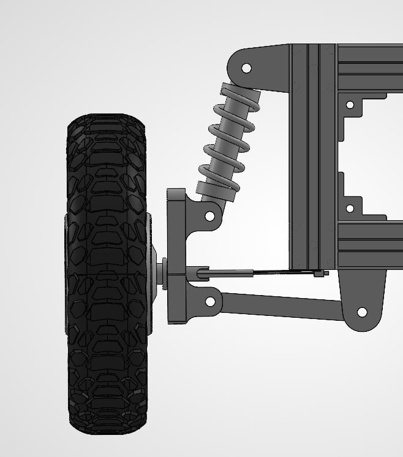
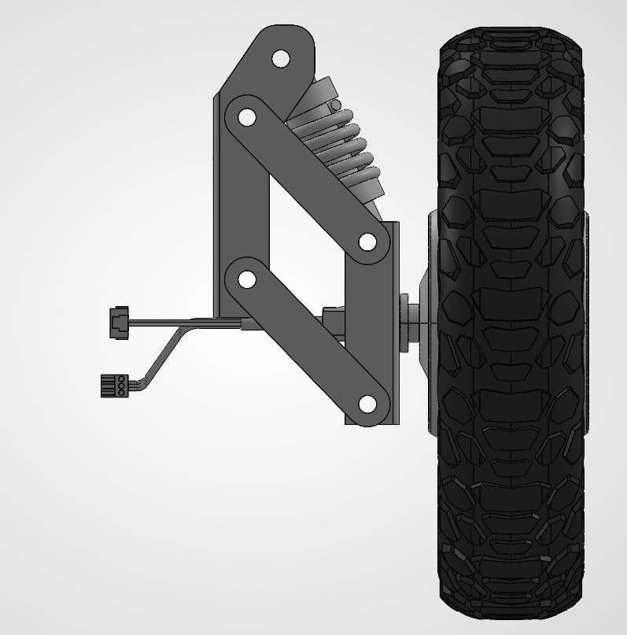
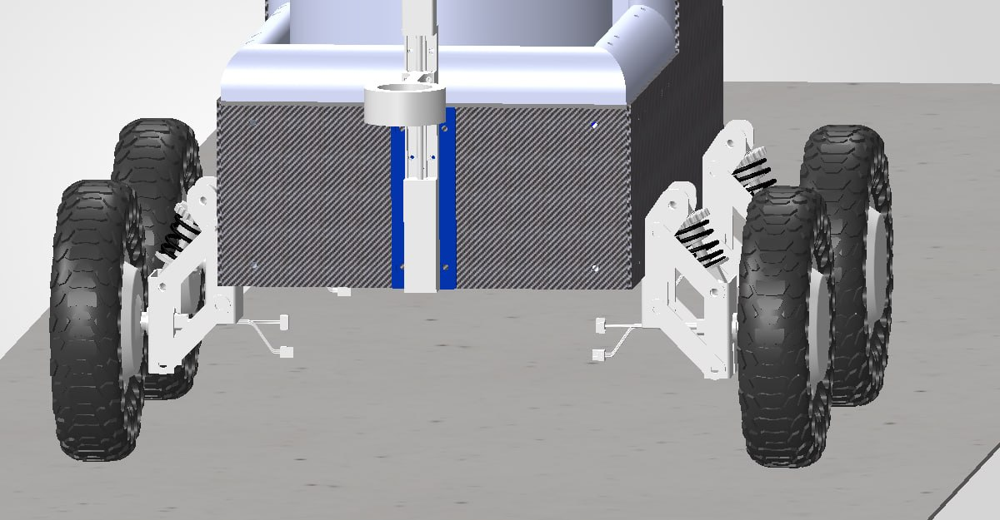

In this chapter, I discuss the design of the suspension subsystem, which keeps the FOD Hunter’s wheels in contact with the ground and limits the vibration reaching the camera and onboard electronics. I first model a single corner of the robot as a spring–damper system, assuming the load is evenly distributed across all four wheels. From this model, I derive the transfer function and analyse the step response to select a spring rate of 100 lbf/in, the only option that meets both the static sag and natural frequency criteria. I then compare three suspension types and select the double wishbone, keeping the trailing arm as a back-up in case the chassis width becomes a constraint. Finally, video analysis of the assembled suspension shows all four wheels stayed in contact with the ground over undulating terrain (simulated by obstacles).
Purpose and Requirements
- Filter out jitter to ensure computer vision works.
- Minimise vibration to protect other hardware parts.
- Give the FOD Hunter even contact with the ground.
- Static sag = ½ of stroke length (40–60% of stroke length is acceptable).
- Natural frequency < 10 Hz.
Suspension Design Model
Each corner is modelled as a corner mass supported by a spring and a dampener in parallel, sitting on a wheel assumed to be 100% rigid. To describe the physical relationship between the input (road profile) and the output (position of the chassis), we find the transfer function.
- The wheel and tyre are 100% rigid, so all compliance comes from the spring and dampener.
- The 65 kg system mass is shared evenly across the four corners (16.25 kg per corner).
- Dampener value \(b = 400\ \text{Ns/m}\).
- The shock absorber is installed at 25°, giving a motion ratio factor of 0.821.
Static Sag and Transfer Function
Static sag
Initial conditions: velocity = 0 and system acceleration = 0. Considering the vertical direction only:
This reduces to the following, also known as the static sag:
Transfer function
Input road profile = \(x(t)\), output chassis displacement = \(y(t)\). Using \(F = ma\), at equilibrium \(\sum F = 0\) after static sag:
Taking the Laplace transform of all terms:
Expanding all terms:
Regrouping into \(X(s)\) and \(Y(s)\):
Obtaining the transfer function:
Unit Step Response
For a unit step response, \(X(s)=\frac{1}{s}\):
Let \(\omega_n^2=\frac{k}{m}\) and \(2a=\frac{b}{m}\), for completing the square in later steps:
Using partial fractions to simplify:
Comparing coefficients, \(A+B=0\), \(A=1\), \(C=0\):
Completing the square:
Let \(\omega_n^2-a^2=p^2\):
Taking the inverse Laplace transform of both sides:
Given a unit step input, the response \(y(t)\) is characterised by this equation, where:
From the second-order equation, \(2\xi\omega_n=2a\), so the damping ratio is:
Spring Rate Selection
Dampener value \(b = 400\ \text{Ns/m}\) (assumption). \(y(t)\) is plotted with a time step of 0.01 s (originally plotted in Excel).
Interactive: drag the sliders to change the corner mass \(m\), the spring rate \(k\) and the dampener value \(b\). The wheel rate uses \(K_w = K_s \times 0.821\), and the static sag uses \(F_{corner} = mg\).
Spring rate comparison
System mass = 65 kg, corner mass = 16.25 kg, \(F_{corner}\) = 159.4125 N. Angle of installation = 25°, stroke length = 20 mm.
| Spring rate (lbf/in) | Ks (N/m) | Wheel rate Kw (N/m) = Ks × motion ratio [0.821] | Kw (N/mm) | x steady state (mm) | Natural freq. (rad/s) | Natural freq. (Hz) | Result |
|---|---|---|---|---|---|---|---|
| 30 | 5253.803 | 4313.372 | 4.313 | 36.958 | 16.292 | 2.593 | ❌ Does not meet static sag criteria |
| 50 | 8756.338 | 7188.954 | 7.189 | 22.175 | 21.033 | 3.348 | ❌ Does not meet static sag criteria |
| 100 | 17512.677 | 14377.908 | 14.378 | 11.087 | 29.745 | 4.734 | ✅ Meets both criteria |
| 150 | 26269.015 | 21566.862 | 21.567 | 7.392 | 36.431 | 5.798 | ❌ Does not meet static sag criteria |
| 200 | 35025.354 | 28755.816 | 28.756 | 5.544 | 42.066 | 6.695 | ❌ Does not meet static sag criteria |
| 300 | 52538.031 | 43133.723 | 43.134 | 3.696 | 51.521 | 8.200 | ❌ Does not meet static sag criteria |
| 400 | 70050.708 | 57511.631 | 57.512 | 2.772 | 59.491 | 9.468 | ❌ Does not meet static sag criteria |
| 500 | 87563.385 | 71889.539 | 71.890 | 2.217 | 66.513 | 10.586 | ❌ Does not meet natural frequency criteria |
| 550 | 96319.723 | 79078.493 | 79.078 | 2.016 | 69.759 | 11.103 | ❌ Does not meet natural frequency criteria |
| 600 | 105076.062 | 86267.447 | 86.267 | 1.848 | 72.861 | 11.596 | ❌ Does not meet natural frequency criteria |
| 650 | 113832.400 | 93456.401 | 93.456 | 1.706 | 75.836 | 12.070 | ❌ Does not meet natural frequency criteria |
| 700 | 122588.739 | 100645.355 | 100.645 | 1.584 | 78.699 | 12.525 | ❌ Does not meet natural frequency criteria |
| 750 | 131345.077 | 107834.309 | 107.834 | 1.478 | 81.461 | 12.965 | ❌ Does not meet natural frequency criteria |
Green cells meet a criterion: static sag of 8–12 mm (40–60% of the 20 mm stroke) or natural frequency < 10 Hz. Red rows fail at least one criterion.
Cost Trade-off: Off-the-Shelf vs Adjustable Shock Absorbers
Shock absorbers in this size range cost from about $[2] to $[800] each. The main difference between them is precision and adjustability. The spring rate is largely fixed once a spring is chosen, but the damping can vary significantly. In a hydraulic damper, the damping force comes from oil forced through small orifices as the shock compresses and extends. A smaller orifice resists the flow more, giving a higher damping coefficient and a slower, more controlled response. A larger orifice gives lower damping and a softer response. Higher-end shock absorbers allow these settings to be adjusted and tuned.
For the FOD Hunter, the main innovations are the coordination between the FOD Argus and the FOD Hunter and the FOD pickup mechanism. To put more budget and time into these systems, I chose a low-cost, non-adjustable shock absorber ([part name], $[X] each, $[4X] for four corners) instead of an adjustable unit. The trade-off is that its damping coefficient is not published or adjustable, which is why my model assumes \(b = 400\ \text{Ns/m}\) (Section 2). Despite this, the selected 100 lbf/in spring still meets the static sag and natural frequency requirements, as confirmed by testing (Section [X]). Measuring the actual damping coefficient, for example from the decay rate in a bounce test, is listed as future work.
Suspension Selection
| Suspension type | Advantages | Disadvantages | Remarks | Final decision | |
|---|---|---|---|---|---|
 | Trailing arm | Constant track width, zero camber angle change. Maximum space efficiency, keeping robot width to the minimum. Low vertical profile. | Transverse bending moments are concentrated on the main pivot shaft during spot turns. | Used as rear suspension on vehicles, but can also be used on the FOD Hunter with strict width constraints. | Keep as back-up plan in case width is an issue |
 | MacPherson strut | Leaves space for other parts at the upper arm assembly. Lower part count. | Higher wear on shock absorbers, as skid steering exerts large stress on them. | Usually used on Ackermann-steering vehicles (which we are not using). | Reject |
 | Double wishbone | The dual-arm set-up easily absorbs lateral bending moments during skid-steering turns. Maintains a stable tyre contact patch across the full stroke. | Mechanically complex. | Typically used in performance vehicles; a wide chassis width is available. | Selected |
Final Design and Status

- Static sag ½ of stroke length (40–60%) ✅
- Natural frequency < 10 Hz ✅
Pending real-life test.